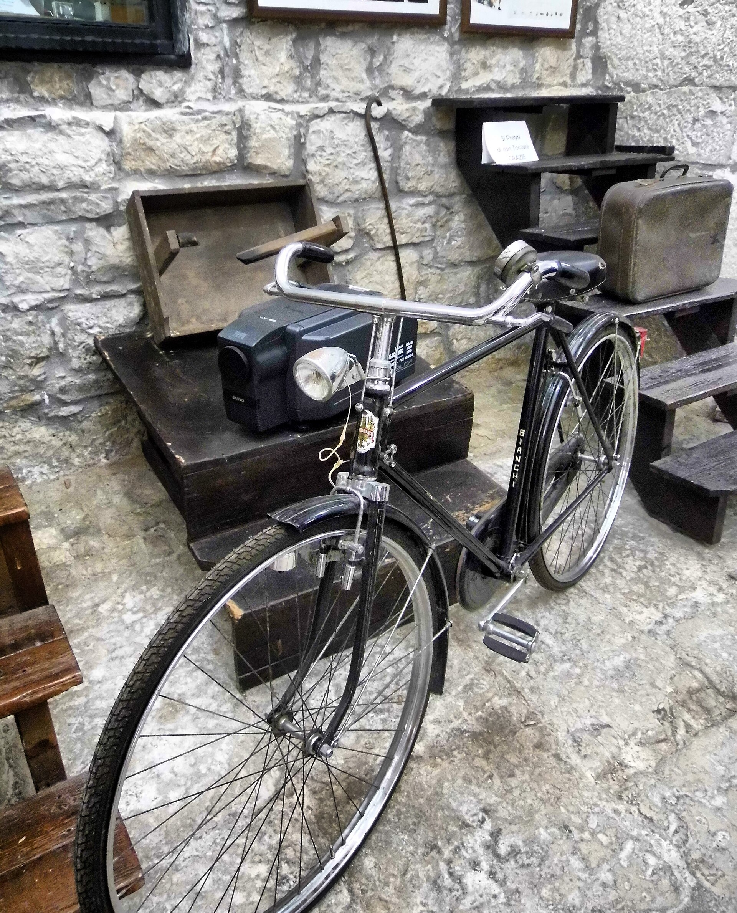
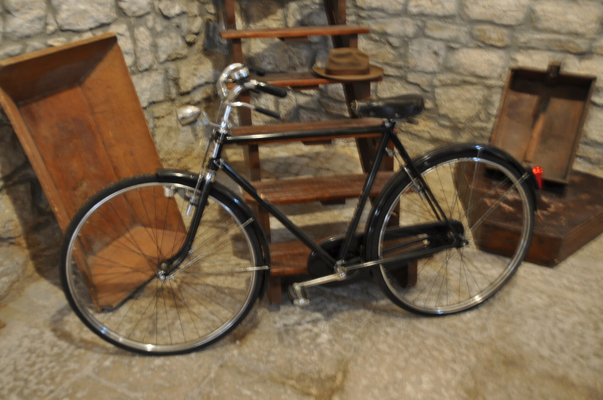

01 · 电影核心
Palazzo Adriano
Vibe · 不是复制出来的主题景区，而是电影里的广场仍在继续过日常。
Piazza Umberto I就是电影里Giancaldo的心脏。面对广场站一会儿，比匆忙寻找“影院原址”更重要：八角喷泉、两座不同礼仪传统的教堂、石墙和钟声，才是Tornatore选择这里的原因。
- 必做：先在广场慢走，再进Museo Nuovo Cinema Paradiso看原始剧照、后台照片与道具。
- 电影细节：外景影院是搭景，内部场景使用镇上的Maria SS. del Carmelo教堂；不要期待一座仍在营业的原版电影院。
- 当天节奏：Palermo 08:30出发；11:00前抵达；广场＋博物馆＋镇上午餐；16:30左右返程。
- 适合谁：对电影有感情的人会很值；其余家人也能把它当作Monti Sicani里的真实山城日。


